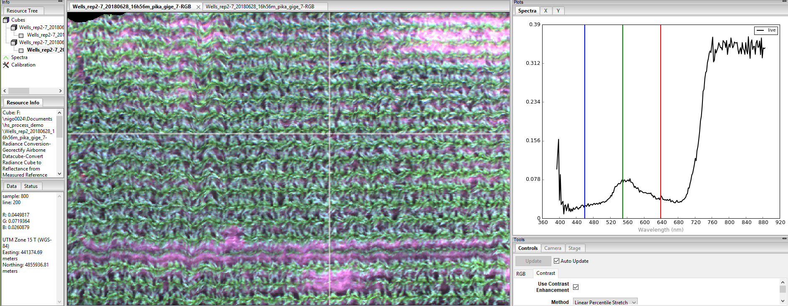
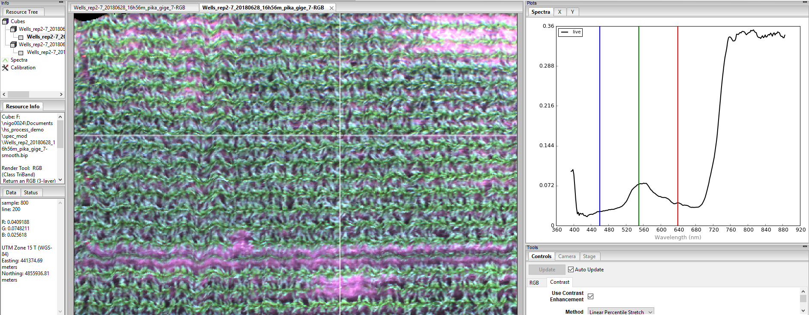

3.1.7. spec_mod¶
-
class
hs_process.spec_mod(spyfile)[source]¶ Bases:
objectClass for manipulating data within the spectral domain, which is usually pixel-based.
Methods Summary
load_spyfile(spyfile)Loads a
SpyFile(Spectral Python object) for data access and/or manipulation by thehstoolsclass.spectral_clip([wl_bands, spyfile])Removes/clips designated wavelength bands from the hyperspectral datacube.
spectral_smooth([window_size, order, spyfile])Performs Savitzky-Golay smoothing on the spectral domain
Methods Documentation
-
load_spyfile(spyfile)[source]¶ Loads a
SpyFile(Spectral Python object) for data access and/or manipulation by thehstoolsclass.- Parameters
spyfile (
SpyFileobject) -- The datacube being accessed and/or manipulated.
Example
Load and initialize the
hsioandspec_modmodules>>> from hs_process import hsio >>> from hs_process import spec_mod >>> fname_in = r'F:\nigo0024\Documents\hs_process_demo\Wells_rep2_20180628_16h56m_pika_gige_7-Radiance Conversion-Georectify Airborne Datacube-Convert Radiance Cube to Reflectance from Measured Reference Spectrum.bip.hdr' >>> io = hsio(fname_in) >>> my_segment = segment(io.spyfile)
Load datacube
>>> my_segment.load_spyfile(io.spyfile) >>> my_segment.spyfile Data Source: 'F:\nigo0024\Documents\hs_process_demo\Wells_rep2_20180628_16h56m_pika_gige_7-Radiance Conversion-Georectify Airborne Datacube-Convert Radiance Cube to Reflectance from Measured Reference Spectrum.bip' # Rows: 617 # Samples: 1827 # Bands: 240 Interleave: BIP Quantization: 32 bits Data format: float32
-
spectral_clip(wl_bands=[[0, 420], [760, 776], [813, 827], [880, 1000]], spyfile=None)[source]¶ Removes/clips designated wavelength bands from the hyperspectral datacube.
- Parameters
wl_bands (
listorlistoflists) -- minimum and maximum wavelenths to clip from image; if multiple groups of wavelengths should be cut, this should be a list of lists. For example, wl_bands=[760, 776] will clip all bands greater than 760.0 nm and less than 776.0 nm; wl_bands = [[0, 420], [760, 776], [813, 827], [880, 1000]] will clip all band less than 420.0 nm, bands greater than 760.0 nm and less than 776.0 nm, bands greater than 813.0 nm and less than 827.0 nm, and bands greater than 880 nm (default).spyfile (
SpyFileobject ornumpy.ndarray) -- The data cube to clip; ifnumpy.ndarrayorNone, loads band information fromspec_mod.spyfile(default:None).
- Returns
2-element
tuplecontainingarray_clip (
numpy.ndarray): Clipped datacube.metadata (
dict): Modified metadata describing the clipped hyperspectral datacube (array_clip).
Example
Load and initialize
hsioandspec_mod>>> from hs_process import hsio >>> from hs_process import spec_mod >>> fname_hdr = r'F:\nigo0024\Documents\hs_process_demo\Wells_rep2_20180628_16h56m_pika_gige_7-Radiance Conversion-Georectify Airborne Datacube-Convert Radiance Cube to Reflectance from Measured Reference Spectrum.bip.hdr' >>> io1 = hsio() >>> io1.read_cube(fname_hdr) >>> my_spec_mod = spec_mod(io1.spyfile)
Using
spec_mod.spectral_clip, clip all spectral bands below 420 nm and above 880 nm, as well as the bands near the oxygen absorption (i.e., 760-776 nm) and water absorption (i.e., 813-827 nm) regions.>>> array_clip, metadata = my_spec_mod.spectral_clip( wl_bands=[[0, 420], [760, 776], [813, 827], [880, 1000]])
Save the clipped datacube
>>> fname_hdr_clip = r'F:\nigo0024\Documents\hs_process_demo\spec_mod\Wells_rep2_20180628_16h56m_pika_gige_7-clip.bip.hdr' >>> io1.write_cube(fname_hdr_clip, array_clip, metadata)
Initialize a second instance of
hsioand read in the clipped cube to compare the clipped cube to the unclipped cube>>> io2 = hsio() # initialize a second instance to compare cubes >>> io2.read_cube(fname_hdr_clip) >>> io1.spyfile Data Source: 'F:\nigo0024\Documents\hs_process_demo\Wells_rep2_20180628_16h56m_pika_gige_7-Radiance Conversion-Georectify Airborne Datacube-Convert Radiance Cube to Reflectance from Measured Reference Spectrum.bip' # Rows: 617 # Samples: 1827 # Bands: 240 Interleave: BIP Quantization: 32 bits Data format: float32
The unclipped cube (above) has 240 spectral bands, while the clipped cube (below) has 210.
>>> io2.spyfile Data Source: 'F:\nigo0024\Documents\hs_process_demo\spec_mod\Wells_rep2_20180628_16h56m_pika_gige_7-clip.bip' # Rows: 617 # Samples: 1827 # Bands: 210 Interleave: BIP Quantization: 32 bits Data format: float32
-
spectral_smooth(window_size=11, order=2, spyfile=None)[source]¶ Performs Savitzky-Golay smoothing on the spectral domain
- Parameters
window_size (
int) -- the length of the window; must be an odd integer number (default: 11).order (
int) -- the order of the polynomial used in the filtering; must be less thanwindow_size- 1 (default: 2).spyfile (
SpyFileobject ornumpy.ndarray) -- The data cube to clip; ifnumpy.ndarrayorNone, loads band information fromspec_mod.spyfile(default:None).
- Returns
2-element
tuplecontainingarray_smooth (
numpy.ndarray): Clipped datacube.metadata (
dict): Modified metadata describing the smoothed hyperspectral datacube (array_smooth).
Note
Because the smoothing operation is performed for every pixel individually, this function may take several minutes for large images.
Example
Load and initialize
hsioandspec_mod>>> from hs_process import hsio >>> from hs_process import spec_mod >>> fname_hdr = r'F:\nigo0024\Documents\hs_process_demo\Wells_rep2_20180628_16h56m_pika_gige_7-Radiance Conversion-Georectify Airborne Datacube-Convert Radiance Cube to Reflectance from Measured Reference Spectrum.bip.hdr' >>> io = hsio() >>> io.read_cube(fname_hdr) >>> my_spec_mod = spec_mod(io.spyfile)
Use
spec_mod.spectral_smoothto perform a Savitzky-Golay smoothing operation across the hyperspectral spectral signature.>>> array_smooth, metadata = my_spec_mod.spectral_smooth( window_size=11, order=2)
Save the smoothed datacube using
hsio.write_cube>>> fname_hdr_smooth = r'F:\nigo0024\Documents\hs_process_demo\spec_mod\Wells_rep2_20180628_16h56m_pika_gige_7-smooth.bip.hdr' >>> io.write_cube(fname_hdr_smooth, array_smooth, metadata) Saving F:\nigo0024\Documents\hs_process_demo\spec_mod\Wells_rep2_20180628_16h56m_pika_gige_7-smooth.bip
Open smoothed datacube in Spectronon software to visualize the result of the smoothing for a specific pixel.
Before smoothing (the spectral curve of the pixel at the 800th column/sample and 200th row/line is plotted)
And after smoothing (the spectral curve of the pixel at the 800th column/sample and 200th row/line is plotted)
-